Portfolio
Un lavoro vero e undici esempi costruiti da noi.
Ogni sito è etichettato per quello che è: uno è un lavoro vero, gli altri undici sono esempi. Aprili, guarda come funzionano, poi decidi.
Il museo della Tonnara di Flumentorgiu
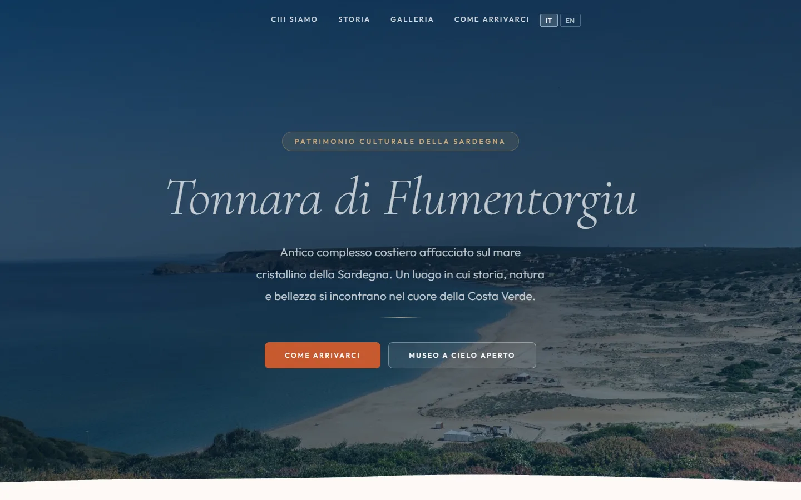
Museo e sito culturale, Arbus
Tonnara di Flumentorgiu
Il sito del complesso della tonnara per l’Associazione Porto Palma: la storia della tonnara e della pesca, le informazioni per la visita, le immagini dell’archivio.
tonnaradiflumentorgiu.it (si apre in una nuova scheda)
Undici esempi. Apri quello del tuo mestiere.
Sono siti completi e funzionanti: menu, foto, moduli, mappa. Salvo dove indicato, i locali non sono veri: nomi, piatti, prezzi e storie li abbiamo inventati noi. Se apri quello del tuo settore, vedi il tipo di sito che ti consegneremo.
-
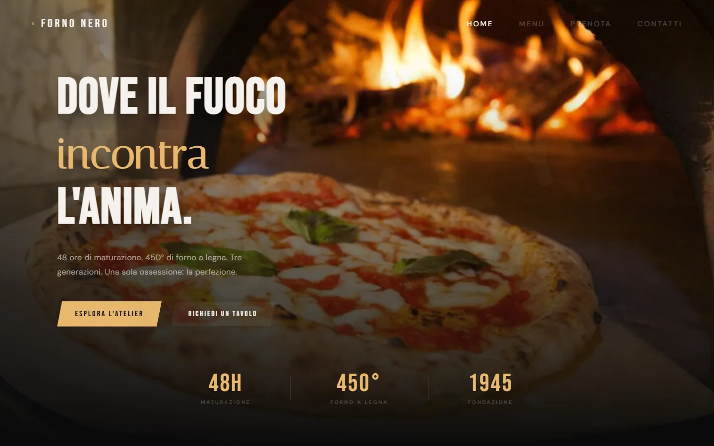
Esempio per settore — locale non realePizzeria, ambientata a Cagliari
Forno Nero
Menu delle pizze con gli allergeni indicati piatto per piatto, racconto delle generazioni della famiglia su una linea del tempo, pulsante WhatsApp che apre la conversazione con l’ordine già impostato.
Se hai una pizzeria, guarda come si scorre il menu con il pollice mentre cammini.
Apri l'esempio (si apre in una nuova scheda)
-
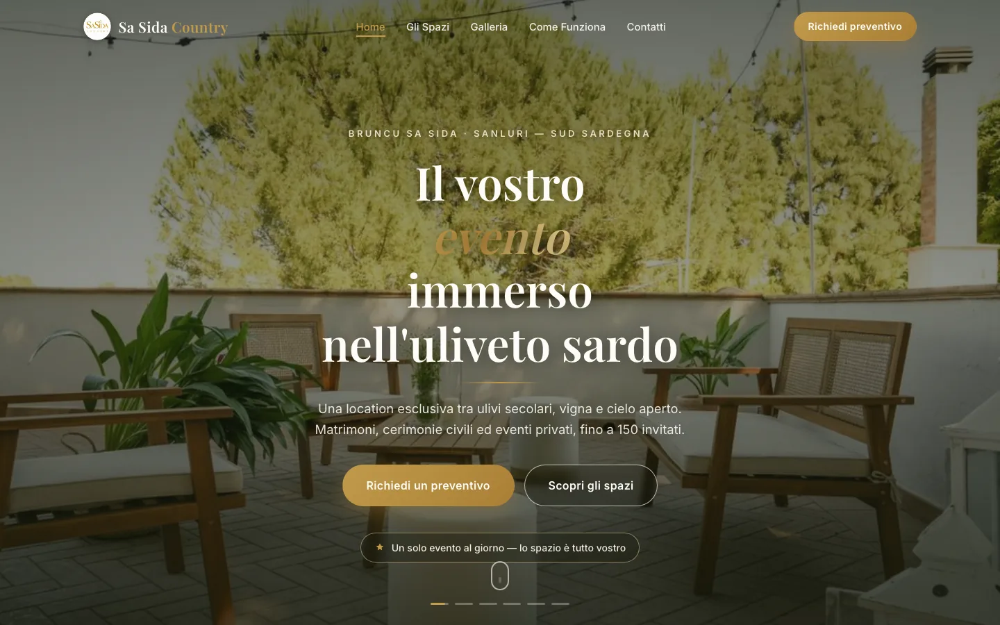
Esempio di sito — locale veroSala per matrimoni ed eventi
Sa Sida Country
Video di apertura a tutto schermo, galleria dedicata ai matrimoni, modulo per il preventivo degli sposi.
Guarda quanto pesa un video in apertura e come facciamo perché non blocchi il telefono.
Apri l'esempio (si apre in una nuova scheda)
-
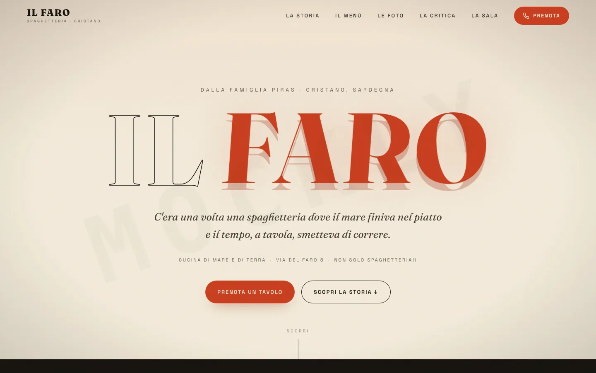
Esempio per settore — locale non realeSpaghetteria, ambientata a Oristano
Il Faro
Menu con foto piatto per piatto, pagina dedicata alla storia del locale, recensioni raccolte in un’unica pagina, pulsante WhatsApp per prenotare.
Se il tuo punto di forza è la storia più che il menu, guarda dove la mettiamo: prima ancora del cibo.
Apri l'esempio (si apre in una nuova scheda)
-
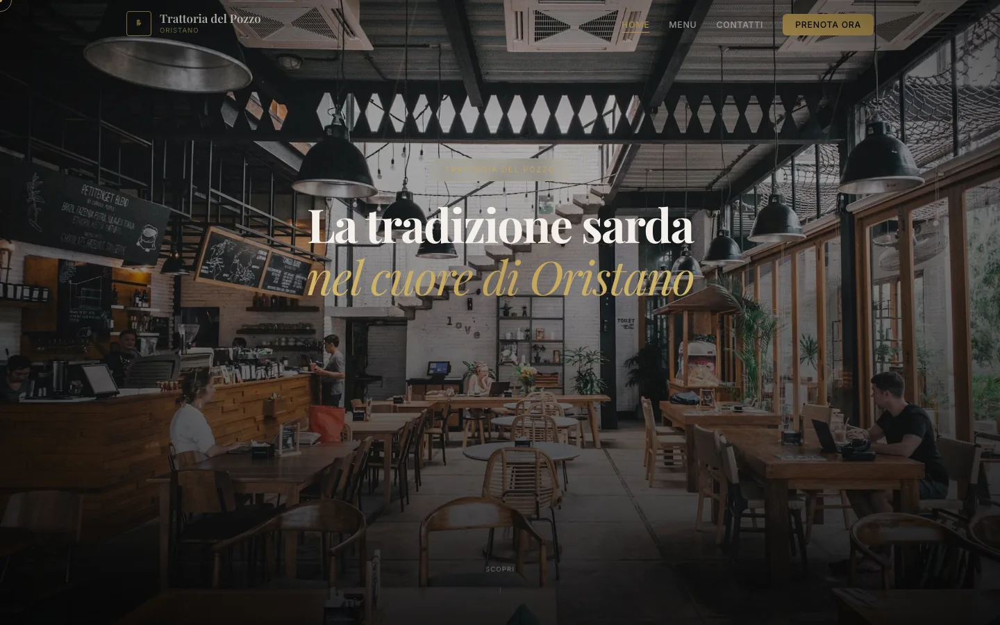
Esempio per settore — locale non realeTrattoria, ambientata a Oristano
Trattoria del Pozzo
Menu con il prezzo accanto a ogni piatto, galleria fotografica della sala, recensioni dei clienti, avviso sui cookie a norma di legge.
Se lavori con i prezzi in vista, guarda come restano leggibili anche su schermo piccolo.
Apri l'esempio (si apre in una nuova scheda)
-
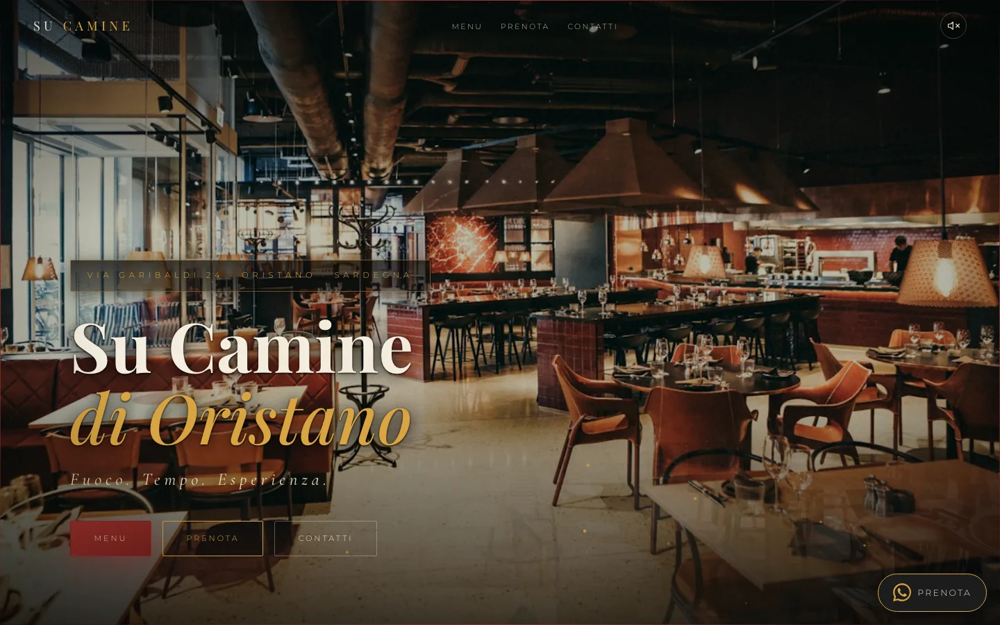
Esempio per settore — locale non realeRistorante, ambientato a Oristano
Ristorante Su Camine
Menu diviso per capitoli invece che in un’unica lista lunga, effetto di profondità nelle foto di sala, recensioni e carta dei vini.
Se il menu è lungo, guarda come lo spezziamo in capitoli invece di farlo scorrere all’infinito.
Apri l'esempio (si apre in una nuova scheda)
-
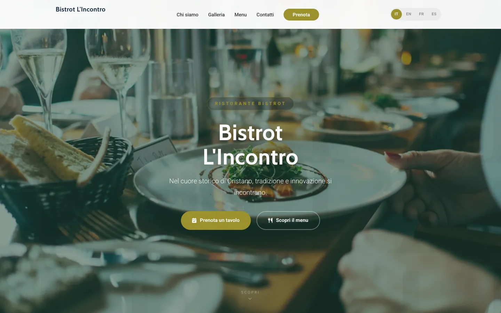
Esempio per settore — locale non realeBistrot, ambientato a Oristano
Bistrot L'Incontro
Sito in quattro lingue (italiano, inglese, francese, spagnolo), pensato per chi lavora molto con turisti.
Se hai clienti stranieri, guarda come cambia lingua senza cambiare pagina.
Apri l'esempio (si apre in una nuova scheda)
-
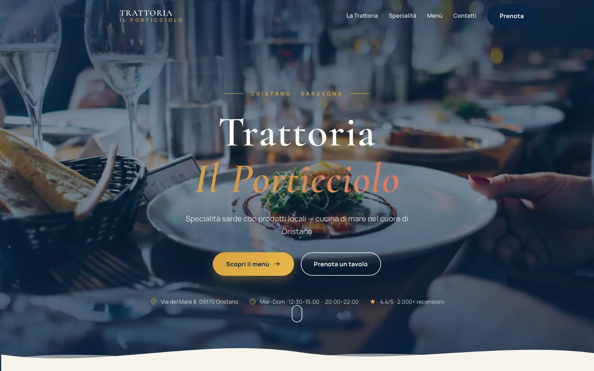
Esempio per settore — locale non realeTrattoria di pesce, ambientata a Oristano
Trattoria Il Porticciolo
Punteggio e numero di recensioni in evidenza già in cima alla pagina, orari e indirizzo sempre visibili, prenotazione con TheFork.
Se le recensioni sono il tuo punto di forza, guarda dove le mettiamo: prima ancora di scorrere la pagina.
Apri l'esempio (si apre in una nuova scheda)
-
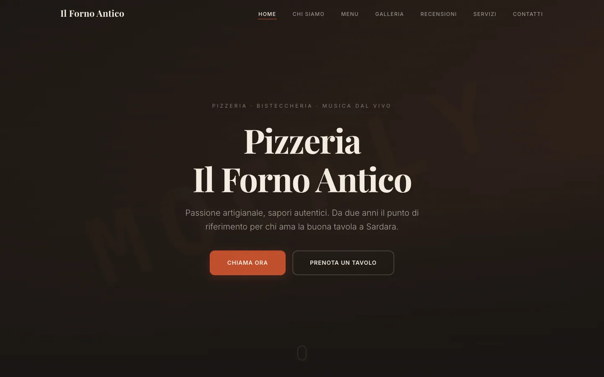
Esempio per settore — locale non realePizzeria e bisteccheria, ambientata a Sardara
Pizzeria Il Forno Antico
Menu diviso fra pizza e carne, sezione eventi con musica dal vivo, pulsanti diretti per chiamare o prenotare.
Se offri più di una cosa (pizza e carne, in questo caso), guarda come restano due menu distinti invece di uno confuso.
Apri l'esempio (si apre in una nuova scheda)
-
 Esempio per settore — locale non reale
Esempio per settore — locale non realeRistorante e pizzeria storico, ambientato a Oristano
Ristorante Il Loggiato
Carta dei vini filtrabile per categoria, oltre quaranta pizze in menu, una storia che parte dal 1925.
Se hai una carta vini lunga, guarda come si filtra invece di scorrerla tutta.
Apri l'esempio (si apre in una nuova scheda)
-
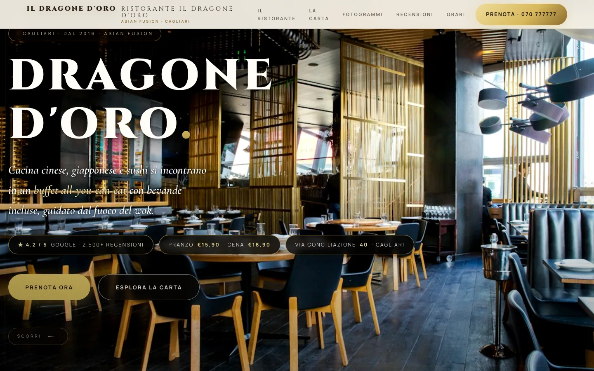
Esempio per settore — locale non realeRistorante buffet asiatico, ambientato a Cagliari
Il Dragone d'Oro
Prezzi diversi per pranzo e cena mostrati subito, punteggio Google in evidenza, indirizzo e galleria fotografica del buffet.
Se il prezzo cambia in base all’orario, guarda come lo mettiamo chiaro fin dall’inizio, senza farlo scoprire al tavolo.
Apri l'esempio (si apre in una nuova scheda)
-
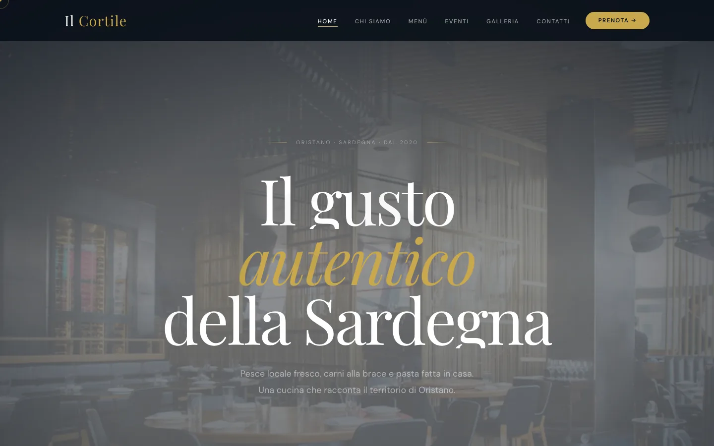
Esempio per settore — locale non realeRistorante con cerimonie, ambientato a Oristano
Il Cortile
Sezione dedicata a cerimonie ed eventi con modulo per richiedere un preventivo, prenotazione tramite TheFork.
Se oltre ai coperti normali organizzi anche eventi, guarda come teniamo le due cose separate senza far sparire l’una nell’altra.
Apri l'esempio (si apre in una nuova scheda)
Non c’è l'esempio del tuo mestiere?
Scrivici che lavoro fai: ti diciamo subito se abbiamo già un esempio adatto o come pensiamo di costruire la tua.